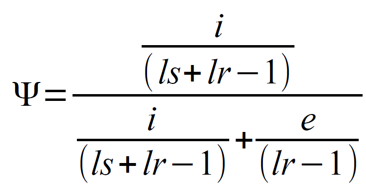

The simplest way to start is to download example from download page and follow instructions. But if you know what you need you can download only program itself.
Just download sajr.jar and sajr.config files from download page. Put them to the one folder, set in, out_base, ann_in parameters (and other if necessary) in sajr.config and run:
java -jar sajr.jar count_reads.
Read counter needs annotation in SAJR format. Use annotation converter to transfroms annotation from gtf or gff3 to SAJR format.
To install R-part of SAJR, run install.packages("http://storage.bioinf.fbb.msu.ru/~mazin/files/SAJR.tar.gz", repos = NULL, type = "source") command in R.
Then call:
Please, do not forget to read function documentation! Thank you!
If option paired is not 0, then SAJR tries to find mate for each read. First SAJR checks whether read name ends with [;\/][12] and, if true, truncates it. Then SAJR collects all mapping locations with the same read name, and makes all possible read pairs that allowed by bam 'mate reference' and 'mate alignment start' fields. If reads have multiple locations (and multiple reads are allowed), all possible pairs are processed as different reads.
If read contains junction, it is assigned to gene the junction from. If one of junctions does not exist in annotation and look_for_gene_for_unknown_junctions is true, SAJR tries to find gene[s] that contains both splice sites (extracted from annotated introns) that the unknown junction uses. If there are such gene[s], junction will be added to them and will treated as annotated in the future. If there are still unknown junction, read either skipped or used depending on option use_reads_with_unknown_junctions. If read contains several junctions it is assigned to either genes that contain all junction or to all genes that contains at least one junction (see option only_junstions_from_same_gene). If read have junction but cannot be assigned to gene it is skipped.
If read do not have junction it is linked to all overlaped genes.
Since read is assigned to gene, it is assigned to all segments that it overlaps by at least one nt. Then following things are checked:
If at least one gene where read overlap ALT or EXN segment exists, read is unassigned from all genes where it overlaps only introns (it allows to work with nested genes).
Then depending on settings count_only_border_reads and count_intron_reads read is counted to segment and introns or not:
Read is counted to segment if:
Read is counted to gene if it overlap at least one EXN segment (INTERNAL if count_only_internal==true) AND (read do not overlap introns OR count_intron_reads==false).
Read is counted to intron (junction) if it counted to any of ALT or EXN segments.
Then, reads mapped to all junction that span given segment (from the same gene) are summed and considered as exclusion reads for the segment.
In case of alternative first/last exon, all junction reads that links first/last exon (segment) to the rest of the gene are counted (i+e). Only junction reads that links this particular exon to the rest of the gene are considered as inclusion reads for the exon (i). By subtraction i from sum described before exclusion reads could be counted: (i+e) - i = e.
Since we have number of inclusion reads (i), number of exclusion reads (e), length of read lr and length of segment ls we can calculate inclusion ratio psi:
For alternative first and last exons inclusion ratio is calculated simply as i/(i+e)
SAJR requires two things to work: exon-introns annotation and bam file. While everybody have bams, annotation is a bit more complicated. This section describes SAJR annotation requirements. Annotation should be in gff format and contain three types of features:
Features should be sorted by chromosome (contig, scaffold etc) ID. Introns and segments should follow its gene and be placed before the next gene. Genes and segments should have unique ids (gene_id,segment_id), it will be used in output. Each segment should have type {EXN,ALT,INT} and position (FIRST,LAST,INTERNAL,ONLY). Since there are many crazy annotations (ones where genes could share introns for example), introns will be identified by coordinates rather than by ids in output, segments, even if they are completely equal in two genes, will be considered separately. All lines started with '#' will be ignored.
Currently SAJR do not support alternative TSS and alternative polyA analysis if they aren't supplied by alternative splice site usage. So, if first (last) exon have more than one alternative TSS (polyA) only one of them should be used in annotation.
If you have problems with transforming of your annotation to SAJR annotation, do not hesitate to contact me.
Segments type denotes whether segment is:
Most of SAJR parameters are placed within configuration file, default file is sajr.config, but it can be overwritten by second parameter in command line.
All parameters in configuration file could be also overwritten in command line in form of -name=value. For example:
java -jar sajr.jar count_reads my.settings -in=my.bam
will use my.settings instead of sajr.config and use my.bam as input file. If my.settings is omitted in command above, sajr.config with my.bam as input will be used.
In default configuration file, parameters are separated into groups by html-like tags. It was done just to organize parameters and makes no sense for program, but regulates which options will be printed to the output files. For count_reads method, parameters from common and read_counter group will be printed.
Through config parsing, all tabs will be removed, any empty lines or lines started with '#' will be skipped as well as html-like tags.
Each parameter in file should be in following form:
name: value; (space after comma is required)
All text after ';' will be ignored.
Duplicate parameters are allowed, only last entry will be used.
| Option | Type | Default | Definition |
| batch_in | string | null | for batch processing. Multiple input files could be supplied separated by comma. Skipped if null, overwrites in parameter otherwise. |
| batch_out | string | null | for batch processing. Multiple output file bases could be supplied separated by comma. Skipped if null, overwrites out_base otherwise. Should contain the same nimber of files as batch_in |
| debug | boolean | true | prints more detailed error messages if any |
| verbose | boolean | true | prints warnings (if suppress_warnings is false) and read statistics to std |
| suppress_warnings | boolean | false | suppress printing of warnings |
| in | string | - | input file. Should be bam or sam. |
| stranded | integer | 0 | defines whether library has strand information. 0 if unstranded, 1 if read is from transcript strand and -1 is read is from complementary strand. If reads are paired, the settings defines strand of the first mate. |
| paired | integer | 0 | defines library type. 0 if unpaired, 1 if paired and reads are on opposite strands, -1 if paired but both mates on the same strand (probably there are no such data, but who cares?). |
| use_mult | boolean | true | use reads mapped to multiple locations (according to NH attribute in bam file) |
| use_singletons | true | boolean | use singletons, i.e. reads with unmapped mate or unmapped reads if they are mixed with paired ones. Has no effect if paired=0 |
| gene_black_list | string | - | gene with ids mentioned in this parameter will not be used. Gene ids should be separated by '@' symbol, since it is likely to never meets in gene ids. |
| exception2warn | boolean | true | transforms non-crucial exceptions to warning. for list of non-crucial exceptions see below |
| ann_in | string | - | input annotation file in gff format. See above for specification |
| count_only_border_reads | false | boolean | count only reads that crosses border of the segment for segment inclusion reads, see 'how it works' section for details |
| count_intron_reads | boolean | false | count reads that overlap introns (including retained ones) for gene and ALT or EXN segment counts |
| count_only_internal | boolean | true | use only INTERNAL (not FIRST and LAST) constitutive segments (including ONLY ones) to count gene counts. |
| look_for_gene_for_unknown_junctions | boolean | false | if meet unknown junction, try to find gene[s] that have the same splice sites that junction does. Adds it to annotation and treat in the same way as annotated one. |
| use_reads_with_unknown_junctions | boolean | true | use reads that contains junctions that aren't from supplied annotation |
| only_junstions_from_same_gene | boolean | false | don't use reads that contains two or more junctions that never meet in one gene in supplied annotation |
| effective_read_length | integer | 100 | If reads are unpaired it is just length of read. If reads are paired it should be something between sum of lengths of mates and length of whole fragment. Affects inclusion ratio calculation |
There are several exceptions that aren't crucial, but could point to some problems in input data. Now, only one such exception exists:
But in the future this list could be extended.